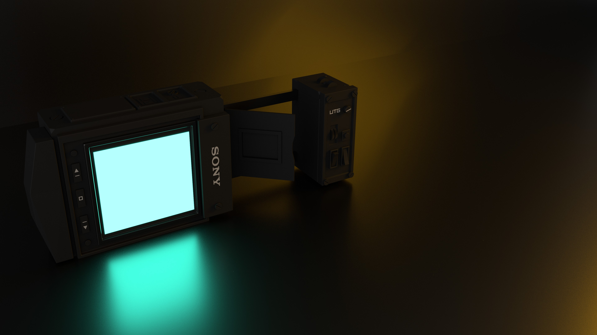
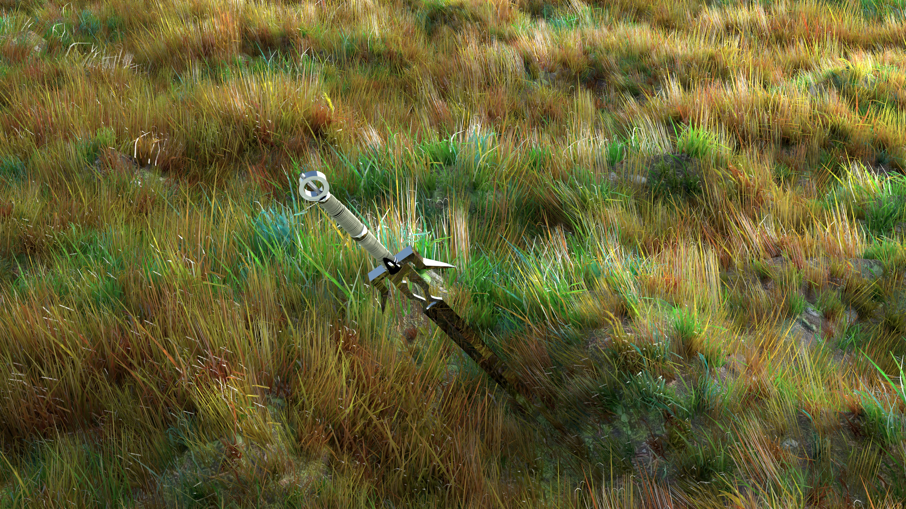
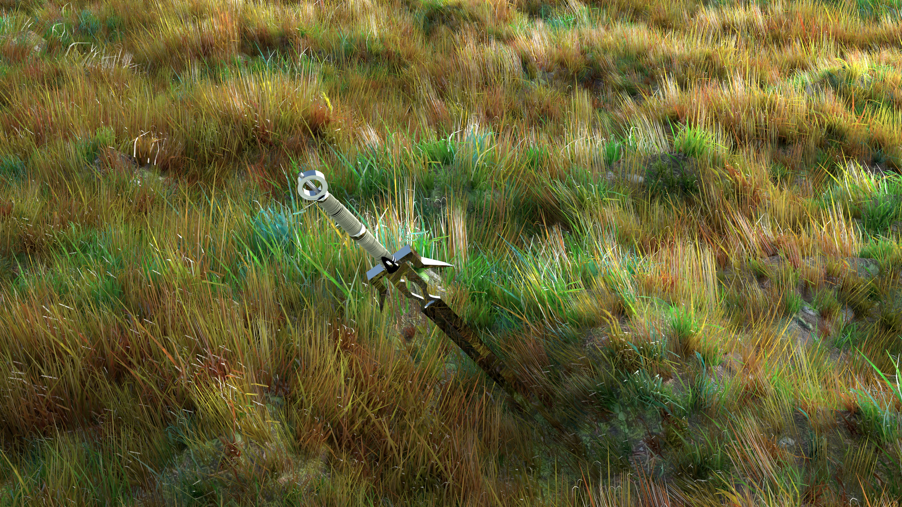

Education
- University of Queensland - Bachelor of IT (Major in HCI/UX)
- Kenmore State High School
Work
- University of Queensland Tutor
- Information Technology Tutor - Primary School, High School, Schools Outreach, BrainRaiders
- ATO - Australian tax office - Business developed applications TM
- Liquorland - Salesmember
University of Queensland Tutor
From 2016 to 2018 I have been working as a tutor at the University of Queensland. At the uni, I have had the opportunity to work in design-focused Information Technology subjects with a large group of academics. Over these years I have taught in a range of subjects varying in difficulty from the first to third year.
Here is an outline of what the courses involved and what I was tasked to do as a tutor.
Physical Computing [3rd Year]
A course designed around team-based design and construction of physical interactive environments/ Prototypes. The interactive product being the deviation away from computing standard input/output. Essentially creating an experience for the user might not have been placed in during usual computing tasks.
My duties included:
- - Contact session feedback and assistance. Would include a variety of tasks including code debugging( c#), working with students in designing physical aspects of projects. Construction advice( LED wiring, soldering, servos, Arduino, Makey Makey, webcam/ Kinect, various hardware tools).
- - Marking written and presentation based portions of assessment.
- - Monitoring tools workshop, upholding safety standards assisting with onboarding students with clearance.
- - Maintaining slack threads and posting informative information.
- - Marking projects in an exhibit setting.
- - Exhibit organisation of resources and setup.
- - HTML, CSS, JavaScript coding and coding practices.
- - User-centred design, Wireframes, Mockups, Style guides, Low Fidelity/High Fidelity prototyping, User research/ Testing
- - Invigilate exams/ marking
- - running HTML/ CSS/ JavaScript workshops
- - Attending meeting for input towards workshop any learning materials
- - Facilitating class-wide discussion and overseeing weekly presentations in tutorials.
- - On the spot marking and feedback. With the addition of detailed written responses for projects for both coding submissions and academic papers.
- - Running contact sessions, often leading them with 1,2 tutors supporting from time to time.
- - Running workshops solo: often technical skills involving JavaScript, basic PHP, API's. With some workshops focusing on graphic design and image/graphics optimisation within Adobe Illustrator/ Photoshop.
- - Consultation on projects, debugging projects, looking at designs preliminary and final.
- - Marking projects in an exhibit setting.
- - Mockup exhibit organisation and setup.
- - Running workshops for basic unity and C#. Workshops also included integration lessons with unity and Arduino/ Makey Makey.
- - Basic teachings of Arduino and node red.
- - Debugging programs.
Web Design [1st year]
A first-year subject which introduces students to the topic of designing websites and following appropriate practices which include:
My duties included:
Design Studio 1 [1st Year]
A first-year subject that furthers teaching in web design. Moving towards the design process in teams.
My Duties Included:
Digital Prototyping [2nd year]
A second year subject to teach students prototyping techniques for generating a proof of concept using digital technologies.
My Duties Included:
Past Projects
- Peer code review Uni (Capstone project)
- Say Hello - Uni (physical computing project)
- Rack City - Govhack
Personal Work
In my spare time I learn about, and create 3D models. All of which are modeled from some objects in real life. I am most proud of my bladerunner device as I had no help from tutorials and used only reference photos to achive the look. If you want to check out some behind the scenes on how I these renders came to be click here.


 
